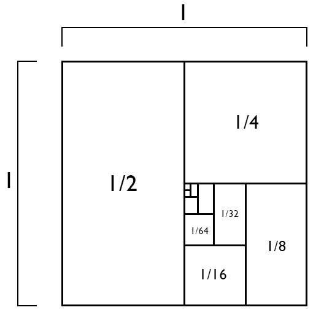

| « 11.2 | up | 11.4 » |
11.3 — Geometric Sequences and Series
A sequence, $\{a_n\}$, is geometric if $$ a_n = a_{n-1} r $$ where $r$ is a constant, called the common ratio.For example, $$ 2, 4, 8, 16, 32, 64, \ldots $$ is geometric with $d=2$, and $$ 2, 1, \frac{1}{2}, \frac{1}{4}, \frac{1}{8}, \frac{1}{16}, \ldots $$ is geometric with $d=1/2$.
Note that we can recover the common ratio, $r$, using any two consecutive terms: $$ r = \frac{a_n}{a_{n-1}} $$
Which of the following are geometric? If so, what is the common ratio, $r$?
- $\displaystyle 10, -1, \frac{1}{10}, -\frac{1}{100}, \ldots$
- $-1, -5, -25, -125, \ldots$
- $9, 6, 1, 0, \ldots$
- $\displaystyle 9, 6, 4, \frac{8}{3}, \frac{16}{9} \ldots$
- Geometric, $d=-1/10$.
- Geometric, $d=5$.
- Not geometric.
- Geometric, $d=2/3$.
Explicit Formula for the $n$th Term
Our current definition is a recursive one. However, as with the arithmetic sequence, we can use this recursive definition to produce an explicit one: \begin{align*} a_n &= a_{n-1}r \\ &= \left(a_{n-2}r\right)r \\ &= a_{n-2}r^2 \\ &= \left(a_{n-4}r\right)r^2 \\ &= a_{n-3}r^3 \\ &= a_{n-3}r^3 \\ &= \vdots \\ &= a_1 r^{n-1} \end{align*} Therefore, for all $n \geq 1$, we have the explicit formula: $$ a_n = a_1 r^{n-1} $$
Find the formula for the $n$th term of a geometric sequence whose first term, $a_1 = 1$, and common ratio, $r=-1/3$.
$\displaystyle a_n = \left(-\frac{1}{3}\right)^{n-1}$
Find the 17th term of the geometric sequence whose first term, $a_1=2$, and common difference $r=\sqrt{2}$.
$a_{17} = 512$
For a geometric sequence, what is the first term, $a_1$, if $a_6 = -1/8$ and the common ratio, $r=1/2$?
$a_1 = -4$
Suppose $\{a_n\}$ is geometric with $a_{18} = 256$ and $a_{26} = 1$. What is the common ratio, $r$, and first term, $a_1$?
$a_1=2^{25}$, $r=1/2$
Summing Geometric Sequences
Recall our notation for the sum of the first $n$ terms of a sequence: $$ S_n = \sum_{j=1}^n a_j $$ For terms from geometric sequence, this becomes: $$ S_n = \sum_{j=1}^n a_1r^{j-1} = a_1 + a_1r + \ldots + a_1r^{n-2} + a_1r^{n-1} $$ Consider multiplying both sides of the previous equation by $r$: $$ rS_n = a_1r + a_1r^2 + \ldots + a_1r^{n-1} + a_1r^{n} $$ Now add $a_1$ to both sides: $$ a_1 + rS_n = a_1 + a_1r + a_1r^2 + \ldots + a_1r^{n-1} + a_1r^{n} $$ So we have: $$ a_1 + rS_n = S_n + a_1r^n $$ So by shuffling things around, we've produced an explicit formula for the sum of the first $n$ terms of a geometric sequence: $$ S_n = a_1\frac{1-r^n}{1-r} $$
Find the sum: $\displaystyle \frac{1}{2} + \frac{1}{4} + \ldots + \left( \frac{1}{2} \right)^{n+1}$
$1-(1/2)^{n+1}$
Find the sum: $\displaystyle 1 + \frac{1}{2} + \ldots + \left( \frac{1}{2} \right)^{n+1}$
$2(1-(1/2)^{n+2})$
Infinite Geometric Series
For the geometric sum, $S_n$, what happens when we let $n \rightarrow \infty$? Recalling properties of the exponential function, we know that $r^n \rightarrow 0$ as $n \rightarrow \infty$ only when $|r| \lt 1$.Therefore only when $|r| \lt 1$, we have: $$ S_n = a_1 \frac{1-r^n}{1-r} \; \rightarrow \; a_1 \frac{1}{1-r} \;\; \text{as} \;\; n \rightarrow \infty $$ So we denote the infinite sum of a geometric series (when it exists) as: $$ S = \frac{a_1}{1-r} $$
Find the sum of the infinite geometrics series, $\displaystyle \frac{1}{2} + \frac{1}{4} + \ldots + \left(\frac{1}{2}\right)^n + \ldots$
How can an infinite sum approach a finite value? Here's a picture of what's going on with the last example:
$1$

Find the sum of the infinite geometric series, $\displaystyle \frac{1}{9} - \frac{1}{27} + \ldots + \left(-1\right)^{n+1}\left(\frac{1}{3}\right)^{n+1}$
$\displaystyle \frac{1}{12}$
Application: Repeating Decimal Numbers
Every repeating decimal number may written as an infinite geometric series with common ratio, $\displaystyle r=\left( \frac{1}{10} \right)^k$ for some value $k$.For example, $$ 0.123123123123\ldots = 123 \left( \frac{1}{1000} \right) + 123 \left( \frac{1}{1000} \right)^2 + \ldots $$ So here, $k=3$.
Given our formula for the sum of an infinite geometric series, this says that any repeating decimal number may written as a fraction.
Write the repeating decimal, $1.7522522522\ldots$, in the form $\displaystyle \frac{m}{n}$ where $m$ and $n$ are integers with no common factors (i.e., write the repeating decimal as a fraction in reduced form).
$\displaystyle 1.7522522\ldots = \frac{389}{222}$